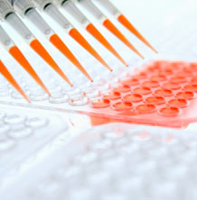
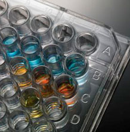

Welcome to Senior Lab
Got in the month of August 2010 on the International Certificate CAP accreditation from the American Society for Bathologian for all units laboratory coefficient, and thus became the lab is the only lab in Egypt adopted by the American Society for Bathologian. The International Accreditation CAP certification is the gold standard in the field of medical laboratory accreditation
Senior lab presents some services online and many programs for every member in the family;
-
hematology
Blood extraction using seismic energy for painless testing.
read more
-
urine & drug testing
Accurate and secure testing of urine for diseases and drugs and medicines.
read more -
x-ray
Fast and clear x-ray results. You’ll be assisted by our friendly staff all the way.
read more
-
pathology and dna
State of the art testing for DNA that’s sure to be have fast and accurate results.
read more